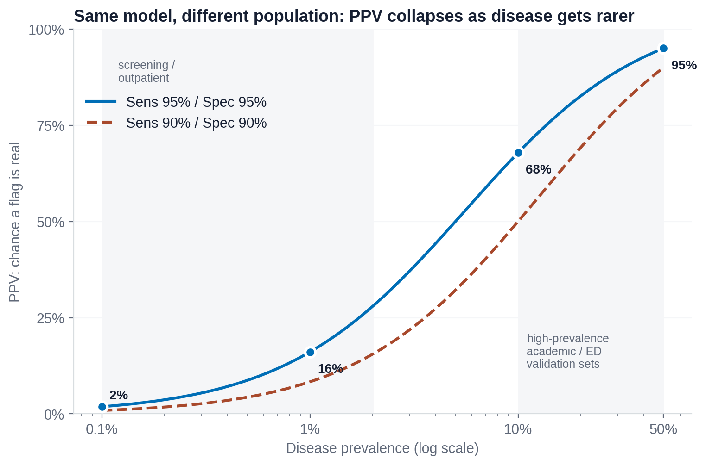

An AI tool is accurate. Does that mean it helps patients?
Does It Work, and Is It Worth It?
The ladder of evidence, why a tool can fail at a new hospital, and how to weigh benefits against costs
Overview
In Lessons 1.4 and 1.5 you learned how to measure a model: sensitivity, specificity, PPV, and the shortcuts that can fool them. Those numbers answer one question: does the tool find the disease? This lesson asks the questions that come next. About 15-20 minutes.
By the end of this lesson you can:
Explain why accuracy is only an early rung of evidence.
Place a claim about an AI tool on the ladder of evidence.
Give two reasons a tool that worked in a study can fail at your hospital.
List the costs and benefits a hospital should weigh before buying a tool.
The ladder of evidence
In 1991, Fryback and Thornbury described how to judge any imaging test as a ladder. Each rung asks a harder question, and each needs a harder study to answer it. AI tools are imaging tests too, so the same ladder applies. Step through it with the nodule-detection AI from Lesson 3.1.
Step through: the nodule AI, rung by rung
Rung 1. Does it run properly?
1Technical
The software opens the CT, runs in under a minute, and puts its marks in the right place on the right slice.
Needed, but says nothing about patients.
Rung 2. Does it find nodules?
2Accuracy
On a test set of CT scans, it finds 94% of nodules (sensitivity) and raises about one false mark per scan.
Papers often add the AUROC: one number from 0.5 (no better than a coin flip) to 1.0 (perfect) for how well a tool tells cases with and without the disease apart.
This is where most AI studies stop. Most FDA-authorized tools were cleared on evidence at this rung.
Rung 3. Does it change the radiologist's thinking?
3Diagnostic thinking
With the AI, radiologists report more true nodules and are more confident about them.
But this only counts if the extra nodules matter. Finding many tiny harmless nodules is not a gain.
Rung 4. Does it change what is done?
4Treatment decisions
More patients like Mr. Diaz get the right follow-up CT. Some also get scans, biopsies or worry they did not need.
Rung 5. Are patients better off?
5Patient outcomes
Are lung cancers found earlier, and do fewer people die of them? Answering this needs a large, often randomized, study that follows patients for years.
Very few AI tools have evidence at this rung.
Rung 6. Is it worth it for society?
6Societal value
Counting the price, the radiologists' time, and the extra scans it triggers, is the health gained worth the money compared with other ways to spend it?
One of the highest-rung AI studies so far is the MASAI trial in Sweden (Lång et al., 2023). More than 80,000 women having screening mammograms were randomly assigned to standard double reading by two radiologists, or to AI-supported reading where AI sorted the low-risk exams to a single reader. The AI group found more cancers, with no rise in false positives, and radiologists read about 44% fewer screens. Even so, the key outcome for patients (fewer cancers found between screens, later) needed further follow-up.
Which rung is this claim?
Interactive: place the claim
Company websites and news headlines often make AI claims. Decide which part of the ladder each claim really reaches.
"Our stroke AI detects large-vessel blockages with an AUROC of 0.96."
An AUROC measures how well the tool separates blocked from not blocked on a test set. Impressive, but still accuracy.
"After the PE triage tool went live, the time from scan to treatment fell from 90 to 40 minutes."
The tool changed what the team did and when. Whether faster treatment led to fewer deaths is a further question.
"In a randomized trial, patients whose ECGs were read with AI had fewer deaths at 90 days."
A randomized comparison of a patient outcome. This is the rung that matters most and is the hardest to reach.
"Matches expert radiologists on 10,000 chest X-rays."
Agreement with experts on a fixed set of images is accuracy. Ask also where the images came from (Lesson 1.5).
"With AI, radiologists changed their recommendation in 12% of nodule cases."
The tool changed decisions. Whether the changes were for the better, and whether patients benefited, is not shown.
"The screening program saved money per year of healthy life gained, after paying for the software."
Cost-effectiveness is the top rung: health gained weighed against money spent.
Will it work here?
A study tells you how a tool did at the hospitals in the study. Your hospital may be different. Testing a tool on data from a place it was not built at is called external validation, and tools often do worse there. Common reasons:
Different machines and settings. A new CT scanner brand or a different scan protocol can change the image just enough to confuse a model.
Different patients. Age, ethnicity, body size and other diseases may differ from the training data.
Different prevalence. If the disease is rarer at your hospital, more of the alerts will be false alarms, even with the same sensitivity and specificity.

Figure 1. The same tool, with the same sensitivity and specificity, at different prevalence. In a busy emergency department where the disease is common, most alerts are true. In a screening population where it is rare, most alerts are false alarms. (Recall PPV from Lesson 1.4.)
A real example
A sepsis prediction model built into a common health-record system was used in hundreds of hospitals. When researchers at one hospital tested it on their own patients, its AUROC was 0.63, far below what the developer reported. It missed about two thirds of sepsis cases and alerted on many patients who did not have sepsis (Wong et al., 2021). The lesson: check a tool on your own patients before trusting it, and keep checking after it goes live, because hospitals and patients change over time.
Is it worth it?
Even a tool that works has costs. Before buying one, a hospital weighs both sides.
Possible benefits
Possible costs
Urgent findings read sooner (Mr. Diaz's clot)
The software price, IT setup and upkeep
Fewer missed findings
Radiologist time spent checking false alarms
Less reading time on simple cases
Extra follow-up scans and biopsies for findings that did not matter
More consistent measurements
Staff training, and monitoring the tool after go-live
Follow-ups that do not get lost
Skills that fade if people stop practicing (Lesson 3.3)
Notice that the benefits and costs often fall on different people. The hospital pays for the software, the radiologist clears the false alarms, and the patient lives with the extra scan. A good decision looks at all of them.
Knowledge check
Answer each question to continue. Any answer is fine; read the explanation.
A company says its fracture AI is FDA-authorized and has an AUROC of 0.95. What has it shown so far?
Authorization and AUROC show accuracy, the second rung. Patient benefit and performance at your hospital are separate questions that need separate evidence.
A tool built in a busy emergency department is moved to an outpatient screening clinic where the disease is much rarer. Sensitivity and specificity stay the same. What happens?
PPV depends on prevalence. When the disease is rarer, a larger share of positive alerts are false, so the same tool creates more work for each true finding.
Which study would best show that an AI tool helps patients?
Only a study that follows patients, ideally randomized, can show a difference in outcomes. Image tests show accuracy and surveys show opinion.
Key takeaways
Accuracy is the second of six rungs. Patient outcomes and value sit at the top, and few AI tools have reached them.
FDA authorization mostly reflects accuracy evidence, not proof of patient benefit.
Tools often do worse at new hospitals: different machines, different patients, different prevalence. Test locally and keep monitoring.
Weigh benefits against costs, including false alarms, extra scans and staff time, and notice who bears each one.